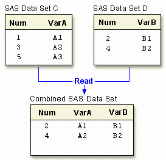

Overview
Introduction
In SAS programming, a common task is to combine observations from two or more data sets into a new data set. By using the DATA step, you can combine data sets in several ways, including the following:
| Method of Combining | Illustration |
|---|---|
One-to-one reading |
 |
| Concatenating Appends the observations from one data set to another. Statement: SET |
|
| Interleaving Intersperses observations from two or more data sets, based on one or more common variables. Statements: SET, BY |
|
| Match-merging Matches observations from two or more data sets into a single observation in a new data set according to the values of a common variable. Statements: MERGE, BY |
| Note | You can also use PROC SQL to join data sets according to common values. PROC SQL enables you to perform many other types of data set joins |
|---|
This chapter shows you how to combine SAS data sets by using one-to-one reading, concatenating, interleaving, and match-merging. When you use the DATA step to combine data sets, you have a high degree of control in creating and manipulating data sets.
Objectives
In this chapter, you learn to
- perform one-to-one reading of data sets
- concatenate data sets
- interleave data sets
- match-merge data sets
- predict the results by understanding match-merge processing
- re-name any like-named variables to avoid overwriting values
- select only matched observations, if desired
One-to-One Reading
In Chapter, Reading SAS Data Sets, you learned how to use the SET statement to read an existing SAS data set. You can also use multiple SET statements in a DATA step to combine data sets. This is called one-to-one reading. In one-to-one reading, you can read different data sets, or you can read the same data set more than once, as if you were reading from separate data sets.
General form, basic DATA step for one-to-one reading:
DATA output-SAS-data-set; SET SAS-data-set-1; SET SAS-data-set-2; RUN;
where
- output-SAS-data-set names the data set to be created
- SAS-data-set-1 and SAS-data-set-2 specify the data sets to be read.
| Note | You can specify any number of data sets in the SET statement. |
|---|
How One-to-One Reading Selects Data
When you perform one-to-one reading,
- the new data set contains all the variables from all the input data sets. If the data sets contain variables that have the same names, the values that are read in from the last data set overwrite the values that were read in from earlier data sets
- the number of observations in the new data set is the number of observations in the smallest original data set. Observations are combined based on their relative position in each data set; that is, the first observation in one data set is joined with the first observation in the other, and so on. The DATA step stops after it has read the last observation from the smallest data set
How One-to-One Reading Works
Let's look at a simple case of one-to-one reading.
data one2one;
set c;
set d;
run;
- The first SET statement reads one observation from data set C.
Num VarA VarB 1 A1 - Then the second SET statement reads one observation from data set D. The value for
Num in data set D overwrites the value for Num in data set C.
Num VarA VarB 2 A1 B1 - Next, the first SET statement reads the second observation from data set C.
Num VarA VarB 2 A1 B1 3 A2 - Finally, the second SET statement reads the second observation from data set D,
overwriting the value for Num in data set C. Because this is the last observation in the
smallest data set, processing stops. The DATA step does not read the third observation in
data set C.
Num VarA VarB 2 A1 B1 4 A2 B2
The following section shows how you might use one-to-one reading.
Example
Suppose you have basic patient data (ID, sex, and age) in the data set Clinic.Patients and want to combine it with other patient data (height and weight) for patients under age 60. The height and weight data is stored in the data set Clinic.Measure. Both data sets are sorted by the variable ID.
Notice that Clinic.Patients contains 7 observations in which the patient age is less than 60, and Clinic.Measure contains 6 observations.
| SAS Data Set Clinic.Patients | |||
|---|---|---|---|
| Obs | ID | Sex | Age |
| 1 | 1129 | F | 48 |
| 2 | 1387 | F | 57 |
| 3 | 2304 | F | 16 |
| 4 | 2486 | F | 63 |
| 5 | 4759 | F | 60 |
| 6 | 5438 | F | 42 |
| 7 | 6488 | F | 59 |
| 8 | 9012 | F | 39 |
| 9 | 9125 | F | 56 |
| SAS Data Set Clinic.Measure | |||
|---|---|---|---|
| Obs | ID | Height | Weight |
| 1 | 1129 | 61 | 137 |
| 2 | 1387 | 63 | 142 |
| 3 | 2304 | 61 | 102 |
| 4 | 5438 | 62 | 168 |
| 5 | 6488 | 64 | 154 |
| 6 | 9012 | 63 | 157 |
To subset observations from the first data set and combine them with observations from the second data set, you can submit the following program:
data clinic.one2one;
set clinic.patients;
if age<60;
set clinic.measure;
run;
The resulting data set, Clinic.One2one, contains 6 observations (the number of observations read from the smallest data set, here Clinic.Measure). The last observation in Clinic.Patients is not read.
| SAS Data Set Clinic.One2one | |||||
|---|---|---|---|---|---|
| Obs | ID | Sex | Age | Height | Weight |
| 1 | 1129 | F | 48 | 61 | 137 |
| 2 | 1387 | F | 57 | 64 | 142 |
| 3 | 2304 | F | 16 | 61 | 102 |
| 4 | 5438 | F | 42 | 62 | 168 |
| 5 | 6488 | F | 59 | 64 | 154 |
| 6 | 9012 | F | 39 | 63 | 157 |
Concatenating
Another way to combine SAS data sets with the SET statement is concatenating, which appends the observations from one data set to another data set. To concatenate SAS data sets, you specify a list of data set names in the SET statement.
General form, basic DATA step for concatenating:
DATA output-SAS-data-set;
SET SAS-data-set-1 SAS-data-set-2;
RUN;
where
- output-SAS-data-set names the data set to be created
- SAS-data-set-1 and SAS-data-set-2 specify the data sets to be read.
| Note | You can specify any number of data sets in the SET statement |
|---|
How Concatenating Selects Data
When a program concatenates data sets, all of the observations are read from the first data set that is listed in the SET statement. Then all of the observations are read from the second data set that is listed, and so on, until all of the listed data sets have been read. The new data set contains all of the variables and observations from all of the input data sets.
data concat;
set a b;
run;
Notice that A and C contain a common variable named Num:
- Both instances of Num (or any common variable) must have the same type attribute, or SAS stops processing the DATA step and issues an error message stating that the variables are incompatible
- However, if the length attribute is different, SAS takes the length from the first data set that contains the variable. In this case, the length of Num in A determines the length of Num in Concat
- The same is true for the label, format, and informat attributes: If any of these attributes are different, SAS takes the attribute from the first data set that contains the variable with that attribute
Example
The following DATA step creates Clinic.Concat by concatenating Clinic.Therapy1999 and Clinic.Therapy2000.
data clinic.concat;
set clinic.therapy1999 clinic.therapy2000;
run;
The listing of Clinic.Concat follows. The first 12 observations were read from Clinic.Therapy1999, and the last 12 observations were read from Clinic.Therapy2000.
| SAS Data Set Clinic.Concat | |||||
|---|---|---|---|---|---|
| Obs | Month | Year | AerClass | WalkJogRun | Swim |
| 1 | 01 | 1999 | 26 | 78 | 14 |
| 2 | 02 | 1999 | 32 | 109 | 19 |
| 3 | 03 | 1999 | 15 | 106 | 22 |
| 4 | 04 | 1999 | 47 | 115 | 24 |
| 5 | 05 | 1999 | 95 | 121 | 31 |
| 6 | 06 | 1999 | 61 | 114 | 67 |
| 7 | 07 | 1999 | 67 | 102 | 72 |
| 8 | 08 | 1999 | 24 | 76 | 77 |
| 9 | 09 | 1999 | 78 | 77 | 54 |
| 10 | 10 | 1999 | 81 | 62 | 47 |
| 11 | 11 | 1999 | 84 | 31 | 52 |
| 12 | 12 | 1999 | 92 | 44 | 55 |
| 13 | 01 | 2000 | 37 | 91 | 83 |
| 14 | 02 | 2000 | 41 | 102 | 27 |
| 15 | 03 | 2000 | 52 | 98 | 19 |
| 16 | 04 | 2000 | 61 | 118 | 22 |
| 17 | 05 | 2000 | 49 | 88 | 29 |
| 18 | 06 | 2000 | 24 | 101 | 54 |
| 19 | 07 | 2000 | 45 | 91 | 69 |
| 20 | 08 | 2000 | 63 | 65 | 53 |
| 21 | 09 | 2000 | 60 | 49 | 68 |
| 22 | 10 | 2000 | 78 | 70 | 41 |
| 23 | 11 | 2000 | 82 | 44 | 58 |
| 24 | 12 | 2000 | 93 | 57 | 47 |
Interleaving
If you use a BY statement when you concatenate data sets, the result is interleaving. Interleaving intersperses observations from two or more data sets, based on one or more common variables.
To interleave SAS data sets, specify a list of data set names in the SET statement, and specify one or more BY variables in the BY statement.
General form, basic DATA step for interleaving:
DATA output-SAS-data-set;
SET SAS-data-set-1 SAS-data-set-2;
BY variable(s);
RUN;
where
- output-SAS-data-set names the data set to be created
- SAS-data-set-1 and SAS-data-set-2 specify the data sets to be read
- variable(s) specifies one or more variables that are used to interleave observations
| Note | You can specify any number of data sets in the SET statement. Each input data set must be sorted or indexed in ascending order based on the BY variable(s). |
|---|
How Interleaving Selects Data
When SAS interleaves data sets, observations in each BY group in each data set in the SET statement are read sequentially, in the order in which the data sets and BY variables are listed, until all observations have been processed. The new data set includes all the variables from all the input data sets, and it contains the total number of observations from all input data sets.
data interlv;
set c d;
by num;
run;
Example
The following DATA step creates Clinic.Interlv by interleaving Clinic.Therapy1999 and Clinic.Therapy2000 :
data clinic.interlv;
set clinic.therapy1999 clinic.therapy2000;
by month;
run;
Below is the listing of Clinic.Interlv. Notice that, unlike the previous example, observations are interleaved by month instead of being concatenated.
| SAS Data Set Clinic.Interlv | |||||
|---|---|---|---|---|---|
| Obs | Month | Year | AerClass | WalkJogRun | Swim |
| 1 | 01 | 1999 | 26 | 78 | 14 |
| 2 | 01 | 2000 | 37 | 91 | 83 |
| 3 | 02 | 1999 | 32 | 109 | 19 |
| 4 | 02 | 2000 | 41 | 102 | 27 |
| 5 | 03 | 1999 | 15 | 106 | 22 |
| 6 | 03 | 2000 | 52 | 98 | 19 |
| 7 | 04 | 1999 | 47 | 115 | 24 |
| 8 | 04 | 2000 | 61 | 118 | 22 |
| 9 | 05 | 1999 | 95 | 121 | 31 |
| 10 | 05 | 2000 | 49 | 88 | 29 |
| 11 | 06 | 1999 | 61 | 114 | 67 |
| 12 | 06 | 2000 | 24 | 101 | 54 |
| 13 | 07 | 1999 | 67 | 102 | 72 |
| 14 | 07 | 2000 | 45 | 91 | 69 |
| 15 | 08 | 1999 | 24 | 76 | 77 |
| 16 | 08 | 2000 | 63 | 65 | 53 |
| 17 | 09 | 1999 | 78 | 77 | 54 |
| 18 | 09 | 2000 | 60 | 49 | 68 |
| 19 | 10 | 1999 | 81 | 62 | 47 |
| 20 | 10 | 2000 | 78 | 70 | 41 |
| 21 | 11 | 1999 | 84 | 31 | 52 |
| 22 | 11 | 2000 | 82 | 44 | 58 |
| 23 | 12 | 1999 | 92 | 44 | 55 |
| 24 | 12 | 2000 | 93 | 57 | 47 |
Simple Match-Merging
So far in this chapter, you've learned how to combine data sets based on the order of the observations in the input data sets. But sometimes you need to combine observations from two or more data sets into a single observation in a new data set according to the values of a common variable. This is called match-merging.
When you match-merge, you use a MERGE statement rather than a SET statement to combine data sets.
General form, basic DATA step for match-merging:
DATA output-SAS-data-set;
MERGE SAS-data-set-1 SAS-data-set-2;
BY <DESCENDING> variable(s);
RUN;
where
- output-SAS-data-set names the data set to be created
- SAS-data-set-1 and SAS-data-set-2 specify the data sets to be read
- variable(s) in the BY statement specifies one or more variables whose values are used to match observations
- DESCENDING indicates that the input data sets are sorted in descending order (largest to smallest numerically, or reverse alphabetical for character variables) by the variable that is specified. If you have more than one variable in the BY statement, DESCENDING applies only to the variable that immediately follows it.
| Note | Each input data set in the MERGE statement must be sorted in order of the values of the BY variable(s), or it must have an appropriate index. Each BY variable must have the same type in all data sets to be merged. |
|---|
| Note | You cannot use the DESCENDING option with indexed data sets because indexes are always stored in ascending order. |
|---|
How Match-Merging Selects Data
Generally speaking, during match-merging SAS sequentially checks each observation of each data set to see whether the BY values match, then writes the combined observation to the new data set.
data merged;
merge a b;
by num;
run;
Basic DATA step match-merging produces an output data set that contains values from all observations in all input data sets. (You can add statements and options to select only observations that match for two or more specific input data sets.)
If an input data set doesn’t have any observations for a particular value of the same-named variable, then the observation in the output data set contains missing values for the variables that are unique to that input data set.
| Note | In match-merging, often one data set contains unique values for the samenamed variable and other data sets contain multiple values for the samenamed variable. |
|---|
Example: Merging Data Sets That Are Sorted in Ascending Order
Suppose you have sorted the data sets Clinic.Demog and Clinic.Visit as follows:
proc sort data=clinic.demog;
by id;
run;
proc print data=clinic.demog;
run;
| Obs | ID | Age | Sex | Date |
|---|---|---|---|---|
| 1 | A001 | 21 | m | 05/22/75 |
| 2 | A002 | 32 | m | 06/15/63 |
| 3 | A003 | 24 | f | 08/17/72 |
| 4 | A004 | . | 03/27/69 | |
| 5 | A005 | 44 | f | 02/24/52 |
| 6 | A007 | 39 | m | 11/11/57 |
proc sort data=clinic.visit;
by id;
run;
proc print data=clinic.visit;
run;
| Obs | ID | Visit | SysBP | DiasBP | Weight | Date |
|---|---|---|---|---|---|---|
| 1 | A001 | 1 | 140 | 85 | 195 | 11/05/98 |
| 2 | A001 | 2 | 138 | 90 | 198 | 10/13/98 |
| 3 | A001 | 3 | 145 | 95 | 200 | 07/04/98 |
| 4 | A002 | 1 | 121 | 75 | 168 | 04/14/98 |
| 5 | A003 | 1 | 118 | 68 | 125 | 08/12/98 |
| 6 | A003 | 2 | 112 | 65 | 123 | 08/21/98 |
| 7 | A004 | 1 | 143 | 86 | 204 | 03/30/98 |
| 8 | A005 | 1 | 132 | 76 | 174 | 02/27/98 |
| 9 | A005 | 2 | 132 | 78 | 175 | 07/11/98 |
| 10 | A005 | 3 | 134 | 78 | 176 | 04/16/98 |
| 11 | A008 | 1 | 126 | 80 | 182 | 05/22/98 |
You can then submit this DATA step to create Clinic.Merged by merging Clinic.Demog and Clinic.Visit according to values of the variable ID:
data clinic.merged;
merge clinic.demog clinic.visit;
by id;
run;
proc print data=clinic.merged;
run;
Notice that all observations, including unmatched observations and observations that have missing data, are written to the output data set.
| Obs | ID | Age | Sex | Date | Visit | SysBP | DiasBP | Weight |
|---|---|---|---|---|---|---|---|---|
| 1 | A001 | 21 | m | 11/05/98 | 1 | 140 | 85 | 195 |
| 2 | A001 | 21 | m | 10/13/98 | 2 | 138 | 90 | 198 |
| 3 | A001 | 21 | m | 07/04/98 | 3 | 145 | 95 | 200 |
| 4 | A002 | 32 | m | 04/14/98 | 1 | 121 | 75 | 168 |
| 5 | A003 | 24 | f | 08/12/98 | 1 | 118 | 68 | 125 |
| 6 | A003 | 24 | f | 08/21/98 | 2 | 112 | 65 | 123 |
| 7 | A004 | . | 03/30/98 | 1 | 143 | 86 | 204 | |
| 8 | A005 | 44 | f | 02/27/98 | 1 | 132 | 76 | 174 |
| 9 | A005 | 44 | f | 07/11/98 | 2 | 132 | 78 | 175 |
| 10 | A005 | 44 | f | 04/16/98 | 3 | 134 | 78 | 176 |
| 11 | A007 | 39 | m | 11/11/57 | . | . | . | |
| 12 | A008 | . | 05/22/98 | 1 | 126 | 80 | 182 |
Example: Sorting and Merging Data Sets in Descending Order
The example above illustrates merging two data sets that are sorted in ascending order of the BY variable ID. To sort the data sets in descending order and then merge them, you can submit the following program:
proc sort data=clinic.demog;
by descending id;
run;
proc sort data=clinic.visit;
by descending id;
run;
data clinic.merged;
merge clinic.demog clinic.visit;
by descending id;
run;
proc print data=clinic.merged;
run;
Notice that you specify the DESCENDING option in the BY statements in both the PROC SORT steps and the DATA step. If you omit the DESCENDING option in the DATA step, you generate error messages about improperly sorted BY variables.
Now the data sets are merged in descending order of the BY variable ID.
| Obs | ID | Age | Sex | Date | Visit | SysBP | DiasBP | Weight |
|---|---|---|---|---|---|---|---|---|
| 1 | A008 | . | 05/22/98 | 1 | 126 | 80 | 182 | |
| 2 | A007 | 39 | m | 11/11/57 | . | . | . | |
| 3 | A005 | 44 | f | 02/27/98 | 1 | 132 | 76 | 174 |
| 4 | A005 | 44 | f | 07/11/98 | 2 | 132 | 78 | 175 |
| 5 | A005 | 44 | f | 04/16/98 | 3 | 134 | 78 | 176 |
| 6 | A004 | . | 03/30/98 | 1 | 143 | 86 | 204 | |
| 7 | A003 | 24 | f | 08/12/98 | 1 | 118 | 68 | 125 |
| 8 | A003 | 24 | f | 08/21/98 | 2 | 112 | 65 | 123 |
| 9 | A002 | 32 | m | 04/14/98 | 1 | 121 | 75 | 168 |
| 10 | A001 | 21 | m | 11/05/98 | 1 | 140 | 85 | 195 |
| 11 | A001 | 21 | m | 10/13/98 | 2 | 138 | 90 | 198 |
| 12 | A001 | 21 | m | 07/04/98 | 3 | 145 | 95 | 200 |
Match-Merge Processing
Introduction
The match-merging examples in this chapter are straightforward. However, match-merging can be more complex, depending on your data and on the output data set that you want to create. To predict the results of match-merges correctly, you need to understand how the DATA step performs match- merges.
When you submit a DATA step, it is processed in two phases:
- the compilation phase, in which SAS checks the syntax of the SAS statements and
compiles them (translates them into machine code). During this phase, SAS also sets up
descriptor information for the output data set and creates the program data vector (PDV),
an area of memory where SAS builds your data set, one observation at a time.
- the execution phase, in which the DATA step reads data and executes any subsequent
programming statements. When the DATA step executes, data values are read into the
appropriate variables in the program data vector. From here, the variables are written to the
output data set as a single observation.
The following sections cover match-merge processing in greater detail. In those sections, you learn
- how the DATA step sets up the new output data set
- what happens when variables in different data sets have the same name
- how the DATA step matches observations in input data sets
- what happens when observations don't match
- how missing values are handled
The Compilation Phase: Setting Up the New Data Set
To prepare to merge data sets, SAS
- reads the descriptor portions of the data sets that are listed in the MERGE statement
- reads the rest of the DATA step program
- creates the program data vector (PDV) for the merged data set
- assigns a tracking pointer to each data set that is listed in the MERGE statement
If variables that have the same name appear in more than one data set, then the variable from the first data set that contains the variable (in the order listed in the MERGE statement) determines the length of the variable. (Recall that the value of the variable is the value in the last data set that contains it.)
The illustration above shows match-merging during the compilation phase. After reading the descriptor portions of the data sets Clients and Amounts, SAS
- creates a program data vector for the new Claims data set. The program data vector contains all variables from the two data sets. Note that although Name appears in both input data sets, it appears in the program data vector only once
- assigns tracking pointers to Clients and Amounts
The Execution Phase: Match-Merging Observations
After compiling the DATA step, SAS sequentially match-merges observations by moving the pointers down each observation of each data set and checking to see whether the BY values match.
- If Yes, the observations are written to the PDV in the order in which the data sets appear
in the MERGE statement. Values of any same-named variable are overwritten by values of
the same-named variable in subsequent data sets. SAS writes the combined observation to
the new data set and retains the values in the PDV until the BY value changes in all the data
sets.
- If No, SAS determines which of the values comes first and writes the observation that
contains this value to the PDV. Then the contents of the PDV are written to the new data set.
When the BY value changes in all the input data sets, the PDV is initialized to missing.
The DATA step continues to process every observation in each data set until it has processed all observations in all data sets.
Handling Unmatched Observations and Missing Values
By default, all observations that are written to the PDV, including observations that have missing data and no matching BY values, are written to the output data set. (If you specify a subsetting IF statement to select observations, then only those that meet the IF condition are written.)
- If an observation contains missing values for a variable, then the observation in the
output data set contains the missing values as well. Observations that have missing values
for the BY variable appear at the top of the output data set.

- If an input data set doesn't have a matching BY value, then the observation in the
output data set contains missing values for the variables that are unique to that input data
set.
Summary of Match-Merge Processing
Now that you've learned the basics of match-merge processing, you can review the compilation and execution phases step by step.
- First, SAS sets up the new data set by reading the descriptor portions of the data sets and creating the program data vector
- Next, SAS sequentially match-merges observations and writes the new observation to the PDV, then to the new data set
- When the BY value changes in all the input data sets, the PDV is initialized to missing
- Missing values for variables, as well as missing values resulting form unmatched observations, are written to the new data set
Renaming Variables
Sometimes you might have same-named variables in more than one input data set. In this case, DATA step match-merging overwrites values of the like-named variable in the first data set in which it appears with values of the like-named variable in subsequent data sets.
For example, Clinic.Demog contains the variable Date (date of birth), and Clinic.Visit also contains Date (date of the clinic visit in 1998). The DATA step below overwrites the date of birth with the date of the clinic visit.
data clinic.merged;
merge clinic.demog clinic.visit;
by id;
run;
proc print data=clinic.merged;
run;
The following output shows the effects of overwriting the values of a variable in the Clinic.Merged data set. In most observations, the date is now the date of the clinic visit. In observation 11, the date is still the birth date because Clinic.Visit did not contain a matching ID value and did not contribute to the observation.
| Obs | ID | Age | Sex | Date | Visit | SysBP | DiasBP | Weight |
|---|---|---|---|---|---|---|---|---|
| 1 | A001 | 21 | m | 11/05/98 | 1 | 140 | 85 | 195 |
| 2 | A001 | 21 | m | 10/13/98 | 2 | 138 | 90 | 198 |
| 3 | A001 | 21 | m | 07/04/98 | 3 | 145 | 95 | 200 |
| 4 | A002 | 32 | m | 04/14/98 | 1 | 121 | 75 | 168 |
| 5 | A003 | 24 | f | 08/12/98 | 1 | 118 | 68 | 125 |
| 6 | A003 | 24 | f | 08/21/98 | 2 | 112 | 65 | 123 |
| 7 | A004 | . | 03/30/98 | 1 | 143 | 86 | 204 | |
| 8 | A005 | 44 | f | 02/27/98 | 1 | 132 | 76 | 174 |
| 9 | A005 | 44 | f | 07/11/98 | 2 | 132 | 78 | 175 |
| 10 | A005 | 44 | f | 04/16/98 | 3 | 134 | 78 | 176 |
| 11 | A007 | 39 | m | 11/11/57 | . | . | . | |
| 12 | A008 | . | 05/22/98 | 1 | 126 | 80 | 182 |
You now have a data set with values for Date that mean two different things: date of birth and date of clinic visit.
To prevent overwriting, you can rename variables by using the RENAME= data set option in the MERGE statement.
General form, RENAME= data set option:
(RENAME=(old-variable-name=new-variable-name))
where
- the RENAME= option, in parentheses, follows the name of each data set that contains one or more variables to be renamed
- old-variable-name specifies the variable to be renamed
- new-variable-name specifies the new name for the variable
| Note | You can rename any number of variables in each occurrence of the
RENAME= option. You can also use RENAME= to rename variables in the SET statement or in the output data set that is specified in the DATA statement. |
|---|
In the following example, the RENAME= option renames the variable Date in Clinic.Demog to BirthDate, and it renames the variable Date in Clinic.Visit to VisitDate.
data clinic.merged;
merge clinic.demog(rename=(date=BirthDate))
clinic.visit(rename=(date=VisitDate));
by id;
run;
proc print data=clinic.merged;
run;
The following output shows the effect of the RENAME= option.
| Obs | ID | Age | Sex | BirthDate | Visit | SysBP | DiasBP | Weight | VisitDate |
|---|---|---|---|---|---|---|---|---|---|
| 1 | A001 | 21 | m | 05/22/75 | 1 | 140 | 85 | 195 | 11/05/98 |
| 2 | A001 | 21 | m | 05/22/75 | 2 | 138 | 90 | 198 | 10/13/98 |
| 3 | A001 | 21 | m | 05/22/75 | 3 | 145 | 95 | 200 | 07/04/98 |
| 4 | A002 | 32 | m | 06/15/63 | 1 | 121 | 75 | 168 | 04/14/98 |
| 5 | A003 | 24 | f | 08/17/72 | 1 | 118 | 68 | 125 | 8/12/98 |
| 6 | A003 | 24 | f | 08/17/72 | 2 | 112 | 65 | 123 | 08/21/98 |
| 7 | A004 | . | 03/27/69 | 1 | 143 | 86 | 204 | 03/30/98 | |
| 8 | A005 | 44 | f | 02/24/52 | 1 | 132 | 76 | 174 | 02/27/98 |
| 9 | A005 | 44 | f | 02/24/52 | 2 | 132 | 78 | 175 | 07/11/98 |
| 10 | A005 | 44 | f | 02/24/52 | 3 | 134 | 78 | 176 | 04/16/98 |
| 11 | A007 | 39 | m | 11/11/57 | . | . | . | . | |
| 12 | A008 | . | . | 1 | 126 | 80 | 182 | 05/22/98 |
Excluding Unmatched Observations
By default, DATA step match-merging combines all observations in all input data sets. However, you might want to select only observations that match for two or more specific input data sets.
To exclude unmatched observations from your output data set, you can use the IN= data set option and the subsetting IF statement in your DATA step. In this case, you use
- the IN= data set option to create and name a variable that indicates whether the data set contributed data to the current observation.
- the subsetting IF statement to check the IN= values and to write to the merged data set only those observations that appear in the data sets for which IN= is specified.
Creating Temporary IN= Variables
Suppose you want to match-merge the data sets Clinic.Demog and Clinic.Visit and select only observations that appear in both data sets.
First, you use IN= to create two temporary variables, indemog and invisit. The IN= variable is a temporary variable that is available to program statements during the DATA step, but it is not included in the SAS data set that is being created.
General form, IN= data set option:
(IN=variable)
where
- the IN= option, in parentheses, follows the data set name
- variable names the variable to be created
Within the DATA step, the value of the variable is 1 if the data set contributed data to the current observation. Otherwise, its value is 0.
The DATA step that contains the IN= options appears below. The first IN= creates the temporary variable indemog, which is set to 1 when an observation from Clinic.Demog contributes to the current observation; otherwise, it is set to 0. Likewise, the value of invisit depends on whether Clinic.Visit contributes to an observation or not.
data clinic.merged;
merge clinic.demog(in=indemog)
clinic.visit(in=invisit
rename=(date=BirthDate));
by id;
run;
| Note | When you specify multiple data set options for a given data set, enclose them in a single set of parentheses. |
|---|
Selecting Matching Observations
Next, to select only observations that appear in both Clinic.Demog and Clinic.Visit, you specify a subsetting IF statement in the DATA step.
In the DATA step below, the subsetting IF statement checks the values of indemog and invisit and continues processing only those observations that meet the condition of the expression. Here the condition is that both Clinic.Demog and Clinic.Visit contribute to the observation. If the condition is met, the new observation is written to Clinic.Merged. Otherwise, the observation is deleted.
data clinic.merged;
merge clinic.demog(in=indemog
rename=(date=BirthDate))
clinic.visit(in=invisit
rename=(date=VisitDate));
by id;
if indemog=1 and invisit=1;
run;
proc print data=clinic.merged;
run;
In previous examples, Clinic.Merged contained 12 observations. In the output below, notice that only 10 observations met the condition in the IF expression.
| Obs | ID | Age | Sex | BirthDate | Visit | SysBP | DiasBP | Weight | VisitDate |
|---|---|---|---|---|---|---|---|---|---|
| 1 | A001 | 21 | m | 05/22/75 | 1 | 140 | 85 | 195 | 11/05/98 |
| 2 | A001 | 21 | m | 05/22/75 | 2 | 138 | 90 | 198 | 10/13/98 |
| 3 | A001 | 21 | m | 05/22/75 | 3 | 145 | 95 | 200 | 07/04/98 |
| 4 | A002 | 32 | m | 06/15/63 | 1 | 121 | 75 | 168 | 04/14/98 |
| 5 | A003 | 24 | f | 08/17/72 | 1 | 118 | 68 | 125 | 08/12/98 |
| 6 | A003 | 24 | f | 08/17/72 | 2 | 112 | 65 | 123 | 08/21/98 |
| 7 | A004 | . | 03/27/69 | 1 | 143 | 86 | 204 | 03/30/98 | |
| 8 | A005 | 44 | f | 02/24/52 | 1 | 132 | 76 | 174 | 02/27/98 |
| 9 | A005 | 44 | f | 02/24/52 | 2 | 132 | 78 | 175 | 07/11/98 |
| 10 | A005 | 44 | f | 02/24/52 | 3 | 134 | 78 | 176 | 04/16/98 |
| Note | SAS evaluates the expression within an IF statement to produce a result that is either
nonzero, zero, or missing. A nonzero or nonmissing result causes the expression to be
true; a zero or missing result causes the expression to be false. Thus, you can specify the subsetting IF statement from the previous example in either of the following ways. The first IF statement checks specifically for a value of 1. The second IF statement checks for a value that is neither missing nor 0 (which for IN= variables is always 1). if indemog=1 and invisit=1; if indemog and invisit; |
|---|
Selecting Variables
As with reading raw data or reading SAS data sets, you can specify the variables that you want to drop or keep by using the DROP= and KEEP= data set options.
For example, the DATA step below reads all variables from Clinic.Demog and all variables except Weight from Clinic.Visit. It then excludes the variable ID from Clinic.Merged after the merge processing is complete.
data clinic.merged(drop=id);
merge clinic.demog(in=indemog
rename=(date=BirthDate))
clinic.visit(drop=weight in=invisit
rename=(date=VisitDate)) ;
by id;
if indemog and invisit;
run;
proc print data=clinic.merged;
run;
| Obs | Age | Sex | BirthDate | Visit | SysBP | DiasBP | VisitDate |
|---|---|---|---|---|---|---|---|
| 1 | 21 | m | 05/22/75 | 1 | 140 | 85 | 11/05/98 |
| 2 | 21 | m | 05/22/75 | 2 | 138 | 90 | 10/13/98 |
| 3 | 21 | m | 05/22/75 | 3 | 145 | 95 | 07/04/98 |
| 4 | 32 | m | 06/15/63 | 1 | 121 | 75 | 04/14/98 |
| 5 | 24 | f | 08/17/72 | 1 | 118 | 68 | 08/12/98 |
| 6 | 24 | f | 08/17/72 | 2 | 112 | 65 | 08/21/98 |
| 7 | . | 03/27/69 | 1 | 143 | 86 | 03/30/98 | |
| 8 | 44 | f | 02/24/52 | 1 | 132 | 76 | 02/27/98 |
| 9 | 44 | f | 02/24/52 | 2 | 132 | 78 | 07/11/98 |
| 10 | 44 | f | 02/24/52 | 3 | 134 | 78 | 04/16/98 |
Where to Specify the DROP= and KEEP= Options
As you've seen in previous chapters, you can specify the DROP= and KEEP= options wherever you specify a SAS data set. When match-merging, you can specify these options in either the DATA statement or the MERGE statement, depending on whether or not you want to process values of the variables in that DATA step:
- If you don't process certain variables and you don't want them to appear in the new data
set, then specify them in the DROP= option in the MERGE statement.
merge clinic.demog(in=indemog rename=(date=BirthDate)) clinic.visit(drop=weight in=invisit rename=(date=VisitDate)); - If you do need to process a variable in the original data set (in a subsetting IF statement,
for example), then you must specify the variable in the DROP= option in the DATA
statement. Otherwise, the statement that uses the variable for processing causes an
error.
data clinic.merged(drop=id);
When used in the DATA statement, the DROP= option simply drops the variables from the new data set. However, they are still read from the original data set and are available for processing within the DATA step.
Additional Features
The DATA step provides a large number of other programming features for manipulating data when you combine data sets. For example, you can
- use IF-THEN/ELSE logic to control processing based on one or more conditions.
- specify additional data set options.
- perform calculations.
- create new variables.
- process variables in arrays.
- use SAS functions.
- use special variables such as FIRST. and LAST. to control processing.
You can also combine SAS data sets in other ways:
- You can perform one-to-one merging, which creates a data set that contains all of the
variables and observations from each contributing data set. Observations are combined
based on their relative position in each data set.
One-to-one merging is the same as one-to-one reading, with two exceptions:- You use the MERGE statement instead of multiple SET statements.
- The DATA step reads all observations from all data sets.
data work.onemerge; merge clinic.demog clinic.visit; run; - You can perform a conditional merge, using DO loops or other conditional statements:
data work.combine; set sales.pounds; do while(not(begin le date le last)); set sales.rate; end; Dollars=(sales*1000)*rate; run;Note You can learn about DO loops in Chapter, Generating Data with DO Loops. - You can read the same data set in more than one SET statement:
data work.combine(drop=totpay); if _n_=1 then do until(last); set sales.budget(keep=payroll) end=last; end; set sales.budget; Percent=payroll/totpay; run;
Summary
Text Summary
One-to-One Reading
You can combine data sets with one-to-one reading by including multiple SET statements in a DATA step. When you perform one-to-one reading, the new data set contains all the variables from all the input data sets. If the data sets contain same-named variables, the values that are read in from the last data set replace those that were read in from earlier ones. The number of observations in the new data set is the number of observations in the smallest original data set.
Concatenating
To append the observations from one data set to another data set, you concatenate them by specifying the data set names in the SET statement. When SAS concatenates, data sets in the SET statement are read sequentially, in the order in which they are listed. The new data set contains all the variables and the total number of observations from all input data sets.
Interleaving
If you use a BY statement when you concatenate data sets, the result is interleaving. Interleaving intersperses observations from two or more data sets, based on one or more common variables. Each input data set must be sorted or indexed in ascending order based on the BY variable(s). Observations in each BY group in each data set in the SET statement are read sequentially, in the order in which the data sets and BY variables are listed, until all observations have been processed. The new data set contains all the variables and the total number of observations from all input data sets.
Simple Match-Merging
Sometimes you need to combine observations from two or more data sets into a single observation in a new data set according to the values of a same-named variable. This is matchmerging, which uses a MERGE statement rather than a SET statement to combine data sets. Each input data set must be sorted or indexed in ascending order based on the BY variable(s). During match-merging, SAS sequentially checks each observation of each data set to see whether the BY values match, then writes the combined observation to the new data set.
Match-Merge Processing
To predict the results of match-merging correctly, you need to understand how the DATA step processes data in match-merges.
Compiling
To prepare to merge data sets, SAS
- reads the descriptor portions of the data sets that are listed in the MERGE statement.
- reads the rest of the DATA step program.
- creates the program data vector (PDV), an area of memory where SAS builds your data set one observation at a time.
- assigns a tracking pointer to each data set that is listed in the MERGE statement.
If variables with the same name appear in more than one data set, then the variable from the first data set that contains the variable (in the order listed in the MERGE statement) determines the length of the variable.
Executing
After compiling the DATA step, SAS sequentially match-merges observations by moving the pointers down each observation of each data set and checking to see whether the BY values match.
- If Yes, the observations are written to the PDV in the order in which the data sets appear in the MERGE statement. Values of any same-named variable are overwritten by values of the same-named variable in subsequent data sets. SAS writes the combined observation to the new data set and retains the values in the PDV until the BY value changes in all the data sets.
- If No, SAS determines which of the values comes first and writes the observation that contains this value to the PDV. Then the observation is written to the new data set.
When the BY value changes in all the input data sets, the PDV is initialized to missing. The DATA step merge continues to process every observation in each data set until it has processed all observations in all data sets.
Handling Unmatched Observations and Missing Values
All observations that are written to the PDV, including observations that have missing data and no matching BY values, are written to the output data set.
- If an observation contains missing values for a variable, then the observation in the output data set contains the missing values as well. Observations that have missing values for the BY variable appear at the top of the output data set.
- If an input data set doesn't have a matching BY value, then the observation in the output data set contains missing values for the variables that are unique to that input data set.
Renaming Variables
Sometimes you might have same-named variables in more than one input data set. In this case, match-merging overwrites values of the same-named variable in the first data set with values of the same-named variable in subsequent data sets. To prevent overwriting, use the RENAME= data set option in the MERGE statement to rename variables.
Excluding Unmatched Observations
By default, match-merging combines all observations in all input data sets. However, you might want to select only observations that match for two or more input data sets. To exclude unmatched observations, use the IN= data set option and the subsetting IF statement in your DATA step. The IN= data set option creates a variable to indicate whether the data set contributed data to the current observation. The subsetting IF statement then checks the IN= values and writes to the merged data set only observations that appear in the data sets for which IN= is specified.
Selecting Variables
You can specify the variables you want to drop or keep by using the DROP= and KEEP= data set options. When match-merging, you can specify these options in either the DATA statement or the MERGE statement, depending on whether or not you want to process values of the variables in that DATA step. When used in the DATA statement, the DROP= option simply drops the variables from the new data set. However, they are still read from the original data set and are available within the DATA step.
Points to Remember
- You can rename any number of variables in each occurrence of the RENAME= option.
- In match-merging, the IN= data set option can apply to any data set in the MERGE statement. The RENAME=, DROP=, and KEEP= options can apply to any data set in the DATA or MERGE statements.
- Use the KEEP= option instead of the DROP= option if more variables are dropped than kept.
- When you specify multiple data set options for a particular data set, enclose them in a single set of parentheses.